| 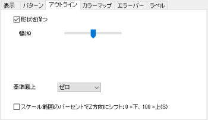 3D棒グラフ(XYZ)のアウトラインタブ |
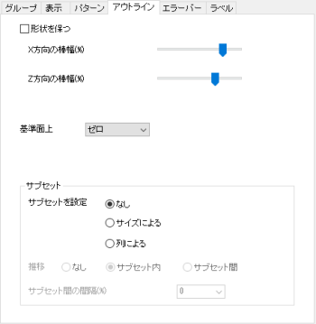 XYY3D棒グラフのアウトラインタブ |
| 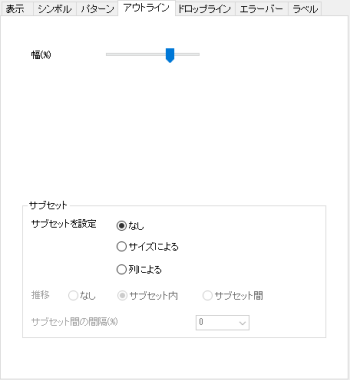 3Dリボングラフのアウトラインタブ |
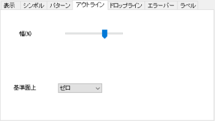 3Dウォールのアウトラインタブ |
| 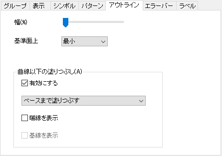 3Dウォーターフォールのアウトラインタブ |
3D棒グラフの形状を維持するかどうか(XYY3D棒グラフに関しては、XとZの方向の棒グラフの幅の縦横比)指定します。3D XYZ棒グラフの場合、形状を維持ボックスがデフォルトでオンになっています。XYY 3D棒グラフの場合、形状を維持ボックスはデフォルトでオフになっています。
形状を維持のチェックがついている場合、幅(%)スライダが表示されます。形状を維持のチェックがついていない場合、3D XYZ棒グラフではX方向の棒の幅(%)とY方向の棒の幅(%)が表示されます。3D XYY棒グラフの場合は、X方向の棒の幅(%)とZ方向の棒の幅(%)が表示されます。
これらのスライダーは棒の幅をX/Y/Zの方向にコントロールするために使用します。スケールは0から100です。この値は棒の幅の割合です。
100はその方向の棒の間には空間が無い事を意味します。
0はその方向の棒は面として表示されることを意味します。
累積/推移のサブグループ内のオフセット (「グループ」タブ内)が選択され、サブグループ化が設定されている場合、サブグループ間の間隔を調整できます。
サブグループ間の感覚 + 棒間の感覚 = 1 - Y方向の棒の幅
つまり
サブグループ間の間隔 = (1 - Y方向の棒の幅)/n*100%。ここで、nはサブグループの数です。
サブグループ間の間隔が0の場合、サブグループ間の棒は隙間なく並んで表示されます。サブグループ間の間隔が100の場合、サブグループ間の間隔は棒間の間隔と等しくなります。
XYZ 3D棒グラフでは、形状を維持にチェックを付けるとこのチェックボックスが利用できます。X方向とY方向の両方で棒の幅を調整します。
3D XYYグラフ (3D ウォール/3D ウォータフォール/3D リボン) の場合、ウォール/リボンの幅をZ方向に調整します。3D ウォータフォールグラフの場合、幅はデフォルトで0に設定されています。
Note: 次のグラフでは、Ｚスケールは、開始 = 3.6、終了 = -3.6に設定されています。
| 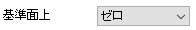 | 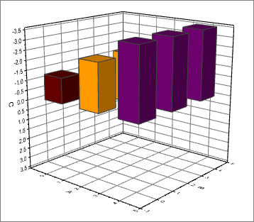 |
| 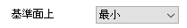 | 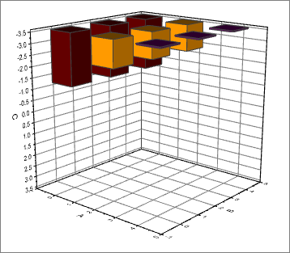 |
| 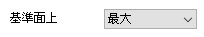 | 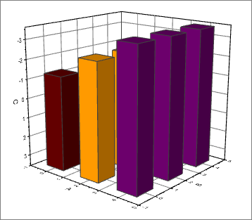 |
関連するシステム変数: @LRBM
このチェックを付けると、テキストボックスが表示され、0から100までの数値を入力することでベース平面がZ軸に対して移動します。
2D棒グラフのように、データポイントを複数のサブセットとして1つのプロットにグループ化することもできます。
有効にするチェックボックスを選択して、ウォーターフォール 曲線の下の領域を塗りつぶします。
Note: ウォーターフォールグラフでは、同じグループ内に複数のプロットがあります。2番目のプロットまたはそれ以降のプロットでは、別のチェックボックスグループ内の最初のプロットに従うが表示され、デフォルトで有効になり、同じグループ内のすべてのプロットで塗りつぶし領域の設定が同じに保たれます。
曲線以下の塗りつぶしに関する詳細は、2D折れ線グラフのグラフの線タブの曲線以下の塗りつぶしを参照してください。